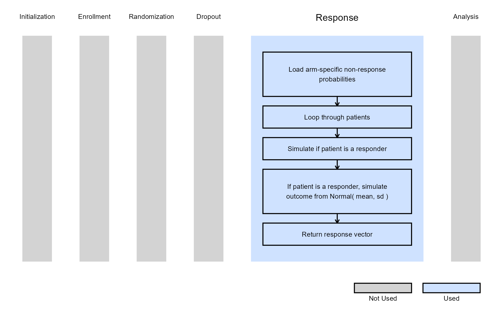

Multiple Arm, Patient Simulation
Gabriel Potvin and Anoop Singh Rawat
February 16, 2026
MultiArmPatientSimulation.RmdThis example is related to the Integration Point: Response. Click the link for setup instructions, variable details, and additional information about this integration point.
- Study objective: Multiple Arm Confirmatory, 3 Arms
- Number of endpoints: Single Endpoint
- Endpoint type:
- Continuous Outcome for Example 1
- Binary Outcome for Example 2
- Task: Explore
Introduction
The following examples illustrate how to integrate new patient outcome simulation (response) capabilities into East Horizon using R functions in the context of a multi-arm clinical trials. Each example demonstrates a different type of statistical endpoint (continuous, time-to-event, and binary).
In the R directory of this example you will find the following R files:
SimulatePatientOutcomeMultiArmPercentAtZero.R - Simulates continuous outcomes from a mixture distribution where a proportion of patients have no response.
SimulatePatientOutcomeMultiArmPercentAtZero.Binary.R - Simulates binary outcomes from a mixture distribution where a proportion of patients have no response.
Example 1 - Simulation of Continuous Outcomes with Non-Responders
This example is related to this R file: SimulatePatientOutcomeMultiArmPercentAtZero.R
In this example, each patient’s outcome represents a change from baseline. However, some patients are expected to show no improvement (non-responders), leading to an outcome of zero. The proportion of such patients can vary across treatment arms (e.g., between 20% and 40% based on prior data).
The function SimulatePatientOutcomeMultiArmPercentAtZero extends the two-arm approach to three arms (two treatment arms), simulating each patient’s outcome according to their assigned treatment. For each arm, the function uses the probability of a zero outcome to determine whether a patient is a non-responder; responders then have their outcome simulated from a normal distribution with arm-specific mean and standard deviation.
Note: This example could be extended to any number
of treatment arms by adding more user parameters such as
dProbOfZeroOutcomeExp3,
dProbOfZeroOutcomeExp4, etc.
Refer to the table below for the definitions of the user-defined parameters used in this example.
| User parameter | Definition |
|---|---|
| dProbOfZeroOutcomeCtrl | Value between 0 and 1 representing the probability a patient is a non-responder in the control arm. |
| dProbOfZeroOutcomeExp1 | Value between 0 and 1 representing the probability a patient is a non-responder in the first experimental arm. |
| dProbOfZeroOutcomeExp2 | Value between 0 and 1 representing the probability a patient is a non-responder in the second experimental arm. |
The figure below illustrates where this example fits within the R integration points of Cytel products, accompanied by a flowchart outlining the general steps performed by the R code.

Example 2 - Simulation of Binary Outcomes with Treatment Resistance
This example is related to this R file: SimulatePatientOutcomeMultiArmPercentAtZero.Binary.R
In this example, patient outcomes are binary, where 0
represents treatment failure (non-response), and 1
indicates a successful treatment and response. Some patients, however,
are treatment-resistant, meaning they will not respond to any treatment
and thus always yield an outcome of 0. The proportion of
resistant patients can differ between treatment arms.
The R function SimulatePatientOutcomeMultiArmPercentAtZero.Binary extends the two-arm approach to three arms (two treatment arms), where each arm has its own probability of treatment resistance. For each simulated patient, the function first determines whether they are treatment-resistant and, if not, simulates their binary response using the arm-specific probability of success.
Note: This example could be extended to any number
of treatment arms by adding more user parameters such as
dProbOfTreatmentResistantExp3,
dProbOfTreatmentResistantExp4, etc.
Refer to the table below for the definitions of the user-defined parameters used in this example.
| User parameter | Definition |
|---|---|
| dProbOfTreatmentResistantCtrl | Value between 0 and 1 representing the probability a patient is treatment-resistant in the control arm. |
| dProbOfTreatmentResistantExp1 | Value between 0 and 1 representing the probability a patient is treatment-resistant in the first experimental arm. |
| dProbOfTreatmentResistantExp2 | Value between 0 and 1 representing the probability a patient is treatment-resistant in the second experimental arm. |
The figure below illustrates where this example fits within the R integration points of Cytel products, accompanied by a flowchart outlining the general steps performed by the R code.